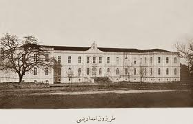
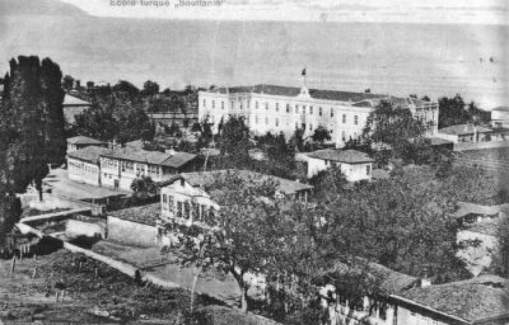
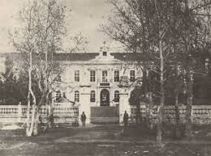

Karadeniz'in köklü eğitim çınarı. Bilim, sanat ve sporda
135 yılı aşkın şanlı bir geçmiş.
1887'den günümüze uzanan 135 yılı aşkın şanlı bir eğitim serüveni
Trabzonlu aileler arasında öne çıkan Nemlizâde Hikmet Efendi ve arkadaşlarının girişimiyle, İstanbul'dan getirtilen Ali Naki Bey, Kavakmeydan Mahallesi'nde "Mekteb-i Hamidiye" adıyla özel bir lise açtı. Bu kuruluş, Trabzon'da çağdaş ve sistematik ortaöğretimin ilk tohumlarını attı. Sultanlık dönemi Trabzon'unda eğitime duyulan toplumsal irade ve aydın iradesinin somut bir ürünüydü bu adım.
Dönemin Trabzon Valisi, aynı zamanda şair ve edip olan Sırrı Paşa'nın öncülüğünde, bugünkü Trabzon Lisesi'nin bulunduğu yerde resmi İdâdî binası tamamlandı ve eğitime açıldı. Mekteb-i Hamidiye'nin tüm kadrosu ve öğrencileri yeni okula nakledildi; Ali Naki Bey bu tarihi kurumun ilk müdürü oldu. Binanın yapım bedeli yaklaşık 5.000 altın liraya mal oldu — o dönem için devasa bir yatırım. İdâdî, yalnızca Trabzon'un değil, Karadeniz kıyısının en prestijli eğitim kurumu konumuna hızla yükseldi.
1887'den 1902'ye kadar geçen on beş yılda idâdî, dokuz dönem mezun verdi. Trabzon ve çevresindeki ailelerin en zeki çocukları bu kurumlara devam etti. Türkçe, Arapça, Farsça, matematik, tarih, coğrafya ve fen derslerini birleştiren müfredat, dönemin Osmanlı eğitim sisteminin en çağdaş örneklerindendi. Mezunlar devlet kademelerine, ticarete ve sanata dağılarak Karadeniz bölgesinin modernleşmesine öncülük etti.
Trabzon İdâdîsi yalnızca ders kitaplarının değil, fikirlerin de yurduydu. Kütüphane genişletildi; Fransızca müfredata girdi; münazara ve edebiyat kulüpleri kuruldu. Öğrenciler "Genç Kalemler" adıyla el yazısıyla bir dergi çıkardılar. İstanbul'dan gelen öğretmenler yeni dünya görüşlerini Karadeniz kıyısına taşıdı. Akşam saatlerinde okul binası, esnafa ve ev hanımlarına okuma-yazma öğreten bir halk mektebine dönüşüyordu. Liman şehrinin kozmopolit havası, okula Rum, Ermeni ve Türk öğrencilerin bir arada öğrendiği nadir bir mozaik katıyordu.
II. Meşrutiyet'in ilanından (1908) sonra Osmanlı İmparatorluğu'nda eğitim alanında köklü reformlar başladı. Trabzon İdâdîsi de bu süreçten nasibini aldı; müfredata Fransızca eklendi, laboratuvar dersleri zenginleştirildi ve yeni öğretmen kadrosu kuruma dahil edildi. Okul, Trabzon vilayetinin aydınlanma merkezi olma özelliğini pekiştirdi.
23 Temmuz 1908'de II. Meşrutiyet'in ilanı Trabzon'a ulaştığında öğrenciler ve öğretmenler birlikte sokaklara döküldü. Okul, tartışmanın ve umudun merkezi hâline geldi. Yeni özgürlük ortamında tiyatro toplulukları, öğrenci kulüpleri ve edebi çevreler filizlendi. Dönemin ünlü fikir insanları okula konuk oldu; müfredat daha çağdaş bir yapıya büründürüldü. Bu coşku, iki yıl sonra okulu Sultânî statüsüne taşıyacak akademik dönüşümün zeminini de hazırladı. Hürriyet havayla birlikte geliyordu ve Trabzon Lisesi o havanın ilk içine çekildiği yerlerden biriydi.
23 yıl boyunca idâdî statüsünde faaliyet gösteren okul, 1910–1911 öğretim yılında Sultânî derecesine yükseltildi ve artık Trabzon Sultânîsi adıyla anılmaya başlandı. Bu dönüşüm, kurumun akademik kalitesinin ve toplumsal itibarının en açık göstergesiydi. Sultânî statüsü, lisenin yalnızca bölgenin değil, imparatorluğun en seçkin okulları arasında yer aldığına işaret ediyordu.
Balkan Savaşları'nın yarattığı karanlık hava Trabzon'u da sardı. Üst sınıf öğrencilerinden bazıları gönüllü olarak cepheye koştu; geride kalanlar her gün cepheden gelen acı haberlerle yüzleşerek derslerine devam etti. Öğretmenler, zor zamanlarda eğitimin bir toplumu ayakta tuttuğunu söylüyordu. Savaş sonrası toprak kayıpları ve göç dalgası kentin dokusunu derinden sarstı; ancak okul, Trabzon'un dayanma gücünün sessiz bir simgesi olmaya devam etti. Milyonlarca kişinin yitip gittiği o yıllarda bir sırayı doldurmak bile bir direniş eylemiydi.
Nisan 1916'da Rus kuvvetleri Trabzon'u işgal etti. Okul binası derhal askerî amaçlarla el konuldu ve eğitime tamamen ara verilmek zorunda kalındı. Öğretmenler ile öğrenciler şehrin dört bir yanına dağıldı; kimi Anadolu içlerine göç etti, kimi ise yurtlarında kalarak günü gün etmeye çalıştı. Trabzon Sultânîsi'nin kitapları, araç gereçleri ve yıllarca biriktirilen arşiv büyük bir tahribata uğradı.
Rus kuvvetleri 1918'de çekildiğinde bina harap hâldeydi. Ancak Trabzonlular yıkılmış bina karşısında yıkılmadı: öğretmenler ve mahalle halkı birlikte kalıntılar arasında sıraları topladı, tahta tahtaları düzeltti, camları taktı ve okulu yeniden ayağa kaldırdı. İşte Trabzon Lisesi ruhunun en çıplak, en dolaysız ifadesi buydu.
Birinci Dünya Savaşı ve Millî Mücadele yıllarında Trabzon Sultânîsi, büyük zorluklarla karşılaşmasına karşın eğitimini sürdürdü. Öğrenciler ve mezunları Millî Mücadele'ye destek verdi; pek çok eski öğrenci cepheye gönüllü giderek vatanı için savaştı. Cumhuriyet'in ilanından sonra okul yeniden adlandırıldı: Trabzon Lisesi. Bu ad, bugün hâlâ halk arasında yaygın olarak kullanılmaktadır.
Türkiye Cumhuriyeti'nin kurucusu Mustafa Kemal Atatürk, Anadolu gezisi kapsamında Trabzon'a geldi ve Trabzon Lisesi'ni bizzat ziyaret etti. Öğrencilerle ve öğretmenlerle bir araya gelen Atatürk, okulun şeref defterine tarihe geçecek olan şu cümleyi yazdı:
"Bedeni idman, fikri idmanla mûvazi olmalıdır."
Bu ziyaret, Trabzon Lisesi'nin Türkiye Cumhuriyeti'nin kuruluş ruhuna olan katkısının ve okulun ulusal bellekteki yerinin en güçlü kanıtıdır.
Kasım 1928'de Atatürk'ün harf devrimi ilan edildiğinde Trabzon Lisesi yeni Latin alfabesini öğretmek ve yaymak için hemen harekete geçti. Öğretmenler akşam saatlerinde esnafa, zanaatkârlara ve ev hanımlarına ücretsiz alfabe kursları verdi. Öğrenciler ise kendi ailelerinin "alfabe öğretmeni" kesildi; babasına, annesine, komşusuna yeni harfleri gösterdi. Okul binası, büyük millî okuryazarlık seferberliğinin Trabzon'daki en canlı merkezlerinden birine dönüştü. Bu devrim yalnızca bir yazı değişikliği değil; tüm toplumun zihniyet dönüşümüydü — ve Trabzon Lisesi o dönüşümün en kararlı öncüsüydü.
Atatürk'ün 1924'te okul şeref defterine yazdığı söz yalnızca bir levhada asılı kalmadı; okulun ruhuna işledi. 1930'lardan itibaren beden eğitimi dersleri zorunlu ve ağırlıklı hâle getirildi. Güreş, atletizm ve futbol gündelik hayatın ayrılmaz parçasına dönüştü. Cumhuriyet hükümetinin "sağlıklı nesil" politikaları okulda hayata geçirildi; spor alanları genişletildi, özel beden eğitimi öğretmenleri istihdam edildi. Bu yıllarda atılan temeller, onlarca yıl sonra bir dünya şampiyonluğuyla taçlanacaktı.
1887'de inşa edilen orijinal bina, yarım asrı geride bırakarak eğitim verilmesine elvermez hâle gelmişti. Türkiye'nin en seçkin mimarlardan birini davet etme kararı alındı: Türkiye'de pek çok önemli yapı inşa etmiş olan Alman modernist mimar Bruno Taut (1880–1938). Taut, o dönemde Ankara Üniversitesi DTCF, Atatürk Lisesi ve diğer devlet yapılarını tasarlamaktaydı.
Taut, Trabzon'a gelip araziyi yerinde inceledi. Güneydeki bahçede yüzyıllık bir manolya ağacı duruyordu. Mimar, bu kadim ağacı korumak için bina konumunu kuzeye çekti ve projesini köklü biçimde değiştirdi. Temel atma töreni 16 Haziran 1938'de gerçekleştirildi; ancak Taut bu törenin üzerinden birkaç ay geçmeden, aynı yıl hayatını kaybetti.
1940–1941 öğretim yılında, Bruno Taut'un projesine dayalı olarak tamamlanan yeni binada eğitim hayata geçti. Hem yatılı hem gündüzlü öğrencilere kapılarını açan yapı, Trabzon'un ilk ısıtmalı binalarından biri olmasıyla da tarihe geçti. Cephe tasarımı, Karadeniz iklimini gözeterek doğal ışık ve havalandırmayı ön plana alan modernist bir anlayışla şekillendirilmişti. Bina bugün hâlâ ayaktadır ve orijinal dokusunu büyük ölçüde korumaktadır.
Trabzon Lisesi'nin spor kültürünü anlatan her anlatının merkezinde bir isim vardır: Hayri Gür. 1939 yılında Trabzon Lisesi'ne atanan Gür, burada yarım asrı aşkın süre öğrencilerine futbol, voleybol, tenis ve atletizm gibi pek çok branşı sevdirdi. Onun hedefi yalnızca öğrencileri yetiştirmek değil, Trabzon'u baştan başa bir spor şehrine dönüştürmekti — ve bunu büyük ölçüde başardı.
Hayri Gür'ün adı, Trabzon sporu tarihinde yalnızca bir öğretmen olarak değil, aynı zamanda bir kurucu olarak geçmektedir. 1966'da kurulan ilk Trabzonspor takımının antrenörü olan Gür, bugün milyonların kalbinde yaşayan kulübün ilk teknik direktörü sıfatını taşır. Trabzon Lisesi'nde yetiştirdiği öğrenciler, yıllar içinde Trabzonspor'un ve Türk futbolunun köşe taşları hâline geldi.
Hayri Gür'ün mirası yaşamından sonra da sürmektedir. Trabzon'un Pelitli bölgesindeki 7.500 kişilik çok amaçlı tesis, uluslararası müsabakalara ev sahipliği yapan Hayri Gür Spor Salonu adını taşımaktadır. Aynı şekilde, onun ömür boyu beden eğitimi dersi verdiği Trabzon Merkez Fen Lisesi'nin spor salonu da Hayri Gür Spor Salonu adıyla onurlandırılmıştır. 2010 yılında hayatını kaybettiğinde Trabzonspor'un en yaşlı divan kurulu üyesiydi — kulübü kurarken taşıdığı ateşi son nefesine dek söndürmemişti.
Trabzon Lisesi bu dönemde Karadeniz'in en gözde yatılı okulu konumuna yükseldi. Rize'den Giresun'a, Artvin'den Gümüşhane'ye kadar bölgenin en zeki gençleri sınav kazanarak Trabzon Lisesi yatakhanelerine yerleşti. Biribirinden farklı köylerin, kasabaların çocukları burada tek bir ortak kimlikte eritildi: Trabzon Liseli olmak.
Gece yarısına uzanan ders tartışmaları, manolya ağacının altındaki öğle arası sohbetleri, sabah temizliği ile akşam futbolu arasında sıkışmış ama son derece yoğun bir entelektüel hayat. Yalnızca bilgi değil, bir dünya görüşü kazandırıyordu bu okul öğrencilerine. Bu yılların mezunları bugün Türkiye'nin önde gelen devlet adamları, rektörleri ve aydınlarıdır.
1960'lardan 1970'lere uzanan dönemde Trabzon Lisesi futbol takımı bölge turnuvalarında neredeyse rakipsiz hâle geldi. Hayri Gür'ün kurduğu temelin üstünde yükselen bu kuşak, sahaya çıktığında Trabzon'un tüm şerefini omuzluyordu. Maçlar, okul bahçesinde yüzlerce öğrencinin nefesini tuttuğu bayram havasında geçiyordu.
Bu dönemin en parlak isimlerinden biri Şenol Güneş'ti. Trabzon Lisesi'nin efsanevi kalecisi Güneş, okulda geliştirdiği refleksleri önce Trabzonspor'un şampiyonluk dönemlerine, ardından 2002 FIFA Dünya Kupası'nda Türkiye'nin üçüncülüğüne taşıdı. O, Trabzon Lisesi'nin spor mirasının en parlak temsilcisiydi — ve onunla birlikte pek çok isim Hayri Gür'ün soyunma odasındaki sözlerini bir ömür boyu içlerinde taşıdı.
Yeni binasına kavuşan Trabzon Lisesi, özellikle 1950–1980 yılları arasında Türkiye'nin en seçkin liseleri arasında yer aldı. Hasan Saka, Sabahattin Eyüboğlu, Bedri Rahmi Eyüboğlu ve Şenol Güneş gibi isimleri yetiştiren bu köklü kurum; başbakanlar, bakanlar, rektörler, yazarlar, sanatçılar ve sporcular çıkardı. Okulun futbol takımı ise onlarca yıl Trabzon'u ulusal ve uluslararası arenalarda temsil etti.
Haziran 2003. Trabzon Lisesi futbol takımı Dünya Liselerarası Futbol Şampiyonası'na katılmak için ülkelerini terk ederek uzak bir kıtaya gitti. Türkiye'yi, Karadeniz'i ve 116 yıllık bir okulun birikimini sırtlayan bu genç takım gruptan çıkmak için mücadele etti; çeyrek finalde, yarı finalde, finalde yıkılmadı.
Final düdüğü çaldığında, Trabzon Lisesi dünya şampiyonuydu. Şehirde kutlamalar sabaha kadar sürdü. Hayri Gür'ün 1939'da ilk antrenman ıslığını çaldığı günden bu yana ekilen tohum, 2003'te dünya kürsüsünde çiçek açmıştı. İki yıl sonra 2005'te aynı takım yeniden dünya sahnesine çıkacak ve bu kez gümüş madalyayla dönecekti. Bu iki derece, Trabzon Lisesi'nin spor tarihinin en parlak sayfalarıdır — ve bu okulun, küçük bir kıyı şehrinin de dünyayla boy ölçüşebileceğinin kanıtıdır.
Millî Eğitim Bakanlığı'nın kararıyla okul, Fen Lisesi statüsüne kavuşturuldu ve resmi adı Trabzon Merkez Fen Lisesi olarak değiştirildi. Bu dönüşümle birlikte, yalnızca LGS ile belirlenen en başarılı öğrenciler okula kabul edilmeye başlandı. Fen bilimleri ve matematik ağırlıklı müfredat, TÜBİTAK projeleri ve uluslararası olimpiyat hazırlıklarıyla desteklendi.
Haziran 2014'te Trabzon Merkez Fen Lisesi, fen lisesi kimliğiyle ilk mezunlarını verdi. Bu mezunlar; Türkiye'nin en prestijli üniversitelerine yerleşerek, yurt içi ve yurt dışı bilim olimpiyatlarında derece kazanarak okulun yeni dönemini başarıyla temsil etti. Bugün okul; TÜBİTAK, Teknofest ve uluslararası yarışmalarda elde ettiği derecelerle Türkiye'nin bilim liselerinin zirvesinde yerini sağlamlaştırmaya devam etmektedir.
Yüzyılı aşan geçmişe ait değerli arşiv görüntüleri

Trabzon İdadisi — Okulun 1887'de açılan ilk resmi binası

Trabzon Sultânîsi — "École turque Soultanie" başlıklı dönem kartpostalı

Trabzon Lisesi — Cumhuriyet'in ilk yıllarında okul binası
Trabzon Lisesi'nin avlusunda yüzyılı aşkın süredir dimdik duran manolya ağacı, okulun en simgesel varlığıdır. Taşlara, koşullara, zaman akışına meydan okuyarak nesiller boyu öğrencilere eşlik etmiştir.
1938 yılında yeni bina inşa edilecekken Alman mimar Bruno Taut, bu kadim ağacın tek bir dalının bile zarar görmemesi için tasarımını köklü biçimde değiştirdi. Binanın oturumu, manolya ağacını kucaklayacak şekilde kuzeye çekildi. Bu karar, mimarın doğaya ve tarihe duyduğu derin saygının belgesidir.
Her ilkbaharda açan pembe-beyaz çiçekleri, binlerce mezunun ortak belleğinde derin izler bırakmıştır. Sınava girerken bir dilek tutan, mezuniyet fotoğraflarını bu ağacın altında çektiren kuşaklar; manolya ağacını okulun ruhu, sürekliliği ve direnci olarak belleklerine nakşetmiştir.
Bedeni idman, fikri idmanla mûvazi olmalıdır.— Mustafa Kemal Atatürk
Ulusal ve uluslararası arenada kazandığımız şanlı dereceler
Biyoloji alanında ulusal olimpiyat ikinciliği
Endüstriyel Tasarım alanında birinci
Biyoloji alanında proje üçüncülüğü
Matematik, Fizik, Kimya dallarında yıllar içinde pek çok ulusal derece
Uluslararası liseler futbol şampiyonasında tarihi birinci
Dünya genelinde en başarılı ikinci lise takımı
Bölgesel ve ulusal düzeyde çeşitli spor dallarında dereceler
"En İyi Sunum" kategorisinde ulusal ikinci
Teknofest Türkiye'de ileri teknoloji ve tasarım projeleriyle yarışmalar
Kangaroo, İMO hazırlık ve ulusal matematik yarışmalarında yıllar içinde dereceler
Trabzon Lisesi'nden yetişerek ülkemize ve insanlığa değer katan seçkin isimler
Trabzon doğumlu devlet adamı ve diplomat. Türk dış politikasının şekillenmesinde kritik rol oynayan Saka, 1947–1949 yılları arasında Başbakanlık görevini üstlendi. Daha önce Dışişleri Bakanlığı'nı da yürüten Saka, CHP'nin kurucu isimlerinden biridir.
Trabzon Lisesi mezunu. Cumhurbaşkanlığı hükümet sisteminde Ulaştırma ve Altyapı Bakanlığı görevini üstlenerek Türkiye'nin köprü, tünel ve demiryolu altyapı projelerini yönetti.
Trabzon Lisesi mezunu devlet adamı. Türkiye Büyük Millet Meclisi Başkanlığı görevini üstlenerek yasama organının en üst makamını temsil etti. Uzun yıllar boyunca aktif siyasi kariyerini sürdürdü.
Trabzon Lisesi mezunu. Türkiye Cumhuriyeti hükümetlerinde bakanlık görevleri üstlenerek ülkenin yönetimine katkı sağladı. Siyasi yaşamı boyunca bölge ve ülke meselelerinde etkin rol oynadı.
Trabzon Lisesi mezunu devlet adamı. Türk siyasi hayatında milletvekilliği ve çeşitli üst düzey görevlerle Trabzon'un sesini Ankara'ya taşıdı.
Trabzon asıllı siyasetçi (doğum: 1970). 2019 yılında İstanbul Büyükşehir Belediye Başkanı seçildi; seçimin iptalinin ardından yenilenen seçimde oyunu daha da artırarak görevini sürdürdü. Türkiye'nin en büyük metropolünü yönetmesiyle uluslararası ilgi odağı oldu.
Trabzon Lisesi mezunu. Türk siyasi yaşamında milletvekilliği ve parti yöneticiliği görevleriyle yer aldı. Siyasi kariyeri boyunca Trabzon'un çıkarlarını ön planda tuttu.
Trabzon Lisesi mezunu kıdemli devlet yöneticisi. Türk kamu yönetiminin üst kademelerinde görev alarak devletin etkin işleyişine katkı sağladı.
Trabzon Lisesi mezunu. Türk devlet yönetiminde önemli bürokratik görevler üstlenerek kamu hizmetine uzun yıllar boyunca katkıda bulundu.
Trabzonlu hukukçu, gazeteci ve tarihçi (1903–1981). Türkiye Cumhuriyeti'nin Millî Mücadele ve kuruluş dönemini kapsayan kapsamlı multi-ciltli tarih eserleriyle tanınır. Hem hukuk hem tarihçilik alanında kalıcı eserler bıraktı.
Trabzonlu Türk düşünürü ve edebiyatçı (1908–1973). Homeros'un İlyada ve Odisseia destanlarını Türkçeye kazandırdı. Anadolu hümanizmasının mimarı; Türk kültür hayatının en çok okunan kalemlerinden biri oldu.
Osmanlı divan şiirinin son büyük temsilcilerinden biri (1889–1943). Gazel başta olmak üzere klasik Türk şiirinin tüm formlarında yazdığı eserleriyle Divan edebiyatının son parlak halkasını oluşturdu.
Türk resim ve şiirinin önemli isimlerinden biri (1911–1975). Halk kültürü ve Anadolu renklerinden beslenen tablolarıyla Paris'te eğitim alıp uluslararası sergilere katıldı. Hem fırçası hem kalemiyle Türk sanatına unutulmaz eserler kazandırdı.
Trabzonlu avukat, tarihçi ve yazar (1933–2019). Osmanlı ve Türk tarihine ilişkin pek çok kitap kaleme aldı. Görüşleri tartışmalı olmakla birlikte geniş okuyucu kitlelerine ulaştı ve Türk düşünce hayatında belirgin bir iz bıraktı.
Trabzonlu mühendis ve akademisyen. İstanbul Teknik Üniversitesi'nin (İTÜ) tarihinde ilk kez bir kadın rektör koltuğuna oturmasını sağladı. Mimarlık ve akademide öncü çalışmalarıyla pek çok genç kadına ilham kaynağı oldu.
Trabzonlu hukukçu ve akademisyen (1904–1992). Türk medenî hukuku alanındaki kapsamlı çalışmalarıyla tanındı; yüzyılın en etkileyici hukuk yazarlarından biri olarak nesillere medeni hukuku sevdirdi.
Trabzonlu futbol efsanesi. Trabzonspor'un en büyük dönemlerini yaşatan kaleci; teknik direktörlükte Türkiye Milli Takımı'nı 2002 FIFA Dünya Kupası'nda 3. yere taşıdı. Trabzonspor ve Beşiktaş'ta kalıcı başarılar elde etti.
Trabzon Lisesi yetiştirmesi futbolcu. Profesyonel kariyerinde ulusal ve bölgesel düzeyde çeşitli kulüplerde forma giyen Keleş, okulun güçlü futbol geleneğinin temsilcilerinden biri oldu.
Trabzonlu profesyonel futbolcu (doğum: 1977). Trabzonspor'da uzun yıllar sahaya çıkan ve Türkiye Milli Takımı formasını da giyen Tekke, golcülükteki performansıyla Türk futbol tarihinde saygın bir yer edindi.
Trabzon Lisesi mezunu profesyonel futbolcu. Trabzonspor başta olmak üzere birçok kulüpte başarılı bir kariyer sürdürerek okulun güçlü futbol kültürünü yaşattı.
Trabzon Lisesi mezunu; oyunculuk kariyerinin ardından teknik direktörlüğe geçti. Hem saha içinde hem de futbol yöneticiliğinde Trabzon'un spor dünyasına katkı sağladı.
Hem spor hem de siyaset arenasında iz bırakan Trabzon Lisesi mezunu. Futbol kariyerinin ardından siyasete atılan Polat, okulun yetiştirdiği çok yönlü simalardan biridir.
Gülbahar Hatun Mah. Faik Dranaz Sk.
Kavakmeydan No:4/B
Ortahisar / TRABZON
(0462) 230 23 30
Trabzon Ortahisar İlçesi
trabzonfenlisesi.meb.k12.tr
T.C. Millî Eğitim Bakanlığı
Trabzon İl Millî Eğitim Müdürlüğü